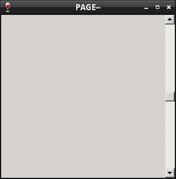

Steward
分享是一種喜悅、更是一種幸福
程式語言 - Netwide Assembler (NASM) - Win32 API - Set Scrollbar
參考資訊：
https://masm32.com/board/index.php
https://www.nasm.us/xdoc/2.13rc9/html/nasmdoc0.html
當視窗的可視區域(如：300x300像素)小於顯示圖片大小(如：640x480像素)時，這時可以使用Windows視窗元件Scrollbar，用來做顯示位置調整的動作，Scrollbar元件有垂直和水平兩種方向並且提供視窗事件回報機制(WM_VSCROLL、WM_HSCROLL)，因此，這裡的Scrollbar元件並不能夠自動幫忙做顯示位置調整的動作，取而代之的是，在收到WM_VSCROLL、WM_HSCROLL事件時，使用者必須自己決定哪些東西要顯示在視窗的可視區域上
main.asm
%include "head.asm"
segment .text
WndProc:
push ebp
mov ebp, esp
cmp dword [ebp + ARG2], WM_VSCROLL
je .handle_vscroll
cmp dword [ebp + ARG2], WM_CLOSE
je .handle_close
cmp dword [ebp + ARG2], WM_DESTROY
je .handle_destroy
jmp .handle_default
.handle_vscroll:
cmp word [ebp + ARG3], SB_LINEUP
je .handle_sb_line_up
cmp word [ebp + ARG3], SB_LINEDOWN
je .handle_sb_line_down
cmp word [ebp + ARG3], SB_PAGEUP
je .handle_sb_page_up
cmp word [ebp + ARG3], SB_PAGEDOWN
je .handle_sb_page_down
jmp .finish
.handle_sb_line_up:
push SLUP
push dword [ebp + ARG1]
call SetWindowText
jmp .finish
.handle_sb_line_down:
push SLDN
push dword [ebp + ARG1]
call SetWindowText
jmp .finish
.handle_sb_page_up:
push SPUP
push dword [ebp + ARG1]
call SetWindowText
jmp .finish
.handle_sb_page_down:
push SPDN
push dword [ebp + ARG1]
call SetWindowText
jmp .finish
.handle_close:
push dword [ebp + ARG1]
call DestroyWindow
xor eax, eax
jmp .finish
.handle_destroy:
push 0
call PostQuitMessage
xor eax, eax
jmp .finish
.handle_default:
push dword [ebp + ARG4]
push dword [ebp + ARG3]
push dword [ebp + ARG2]
push dword [ebp + ARG1]
push dword [pDefWndProc]
call CallWindowProc
.finish:
leave
ret 16
WinMain:
push ebp
mov ebp, esp
push 0
push 0
push 0
push 0
push 300
push 300
push 0
push 0
push WS_OVERLAPPEDWINDOW | WS_VISIBLE | WS_VSCROLL
push szAppName
push WC_DIALOG
push WS_EX_LEFT
call CreateWindowEx
mov [hWin], eax
push WndProc
push GWL_WNDPROC
push dword [hWin]
call SetWindowLong
mov [pDefWndProc], eax
push 0
push 100
push 0
push SB_VERT
push dword [hWin]
call SetScrollRange
push 1
push 50
push SB_VERT
push dword [hWin]
call SetScrollPos
.loop:
push 0
push 0
push 0
push msg
call GetMessage
cmp eax, 0
je .exit
push msg
call DispatchMessage
jmp .loop
.exit:
mov eax, [msg + MSG.wParam]
leave
ret 16
_start:
push 0
call GetModuleHandle
mov [hInstance], eax
call GetCommandLine
mov [pCommand], eax
push SW_SHOWNORMAL
push dword [pCommand]
push 0
push dword [hInstance]
call WinMain
push eax
call ExitProcess
Line 27~55：處理Scrollbar訊息並且顯示在視窗標題
Line 87：WS_VSCROLL是垂直的Scrollbar，WS_HSCROLL則是水平的Scrollbar
Line 100~105：設定Scrollbar最大的範圍
Line 107~111：設定Scrollbar目前的位置
完成
